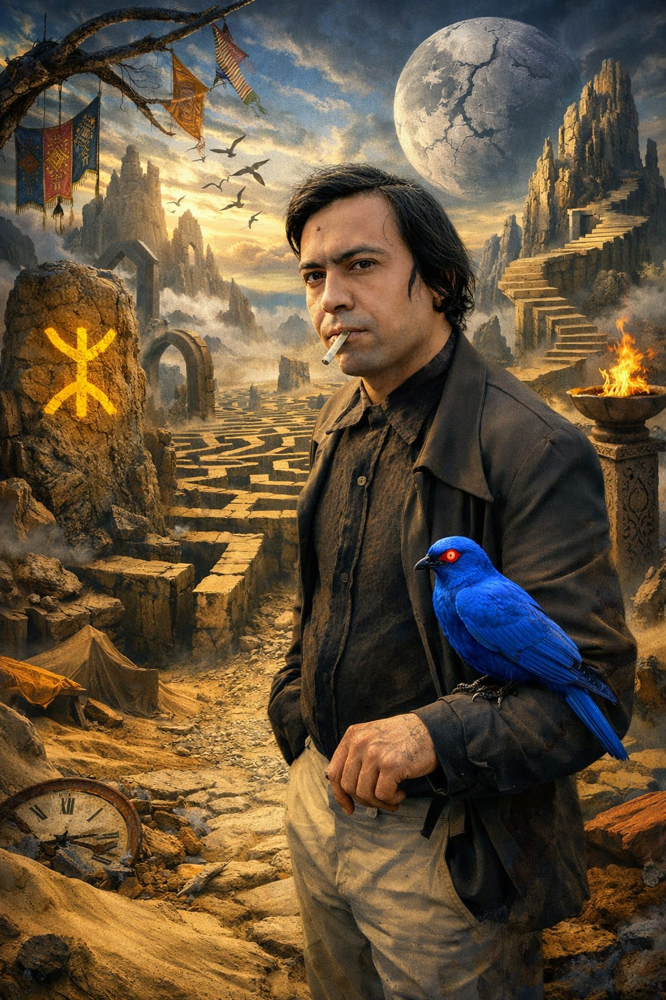

Biographie
Mohammed Khair-Eddine
Mohammed Khair-Eddine est un écrivain marocain né en 1941 à Tafraout. Il est considéré comme l'une des figures importantes de la littérature marocaine moderne.
Ses œuvres se caractérisent par un style puissant, une écriture rebelle et une critique sociale forte.
Il a écrit plusieurs romans, poèmes et textes engagés qui ont marqué la littérature francophone.